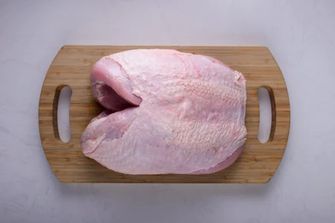

Turkey has earned its reputation as the quintessential Christmas meat for a multitude of reasons. Its succulent, tender meat, when roasted to golden perfection, embodies the festive spirit. The large size of a turkey makes it ideal for family gatherings, symbolizing abundance and togetherness. Its mild flavor serves as a versatile canvas for an array of seasonings and stuffings, allowing chefs to tailor the dish to their liking. Beyond its culinary virtues, the tradition of serving a grand roasted turkey has become synonymous with the holiday season, evoking warmth, nostalgia, and the joy of sharing a bountiful feast with loved ones.

Ingredients
1 turkey crown (about 1.8-2.7 kilograms)
115 grams unsalted butter, softened
3 cloves garlic, minced
2 tablespoons fresh rosemary, chopped
2 tablespoons fresh thyme, chopped
2 tablespoons fresh sage, chopped
Salt and pepper to taste
240 ml chicken or turkey/chicken stock
Optional: 1 lemon, quartered, for added flavor
Optional: Root vegetables for roasting
Optional: streaky bacon
Method
Preheat the oven to 163°C (325°F).
Rinse the turkey crown under cold water and pat it dry with paper towels.
In a small bowl, mix the softened butter with minced garlic, rosemary, thyme, sage, salt, and pepper. This creates a flavorful herb butter.
Carefully lift the skin of the turkey crown, creating a pocket. Rub about two-thirds of the herb butter under the skin, ensuring an even distribution.
Rub the remaining herb butter over the outside of the turkey crown, coating it thoroughly.
Place the turkey crown in a roasting pan. If desired, surround it with quartered lemons and root vegetables for added flavor.
Pour the chicken or turkey broth into the bottom of the pan to keep the meat moist during roasting.
Cover the turkey crown loosely with foil and place it in the preheated oven.
Roast for approximately 20 minutes per kilogram, basting the turkey with pan juices every 30 minutes.
Remove the foil during the last 30-45 minutes of cooking to allow the skin to crisp up and turn golden brown.
Use a meat thermometer to check for doneness. The internal temperature should reach 74°C (165°F).
Once done, let the turkey crown rest for 15-20 minutes before carving.